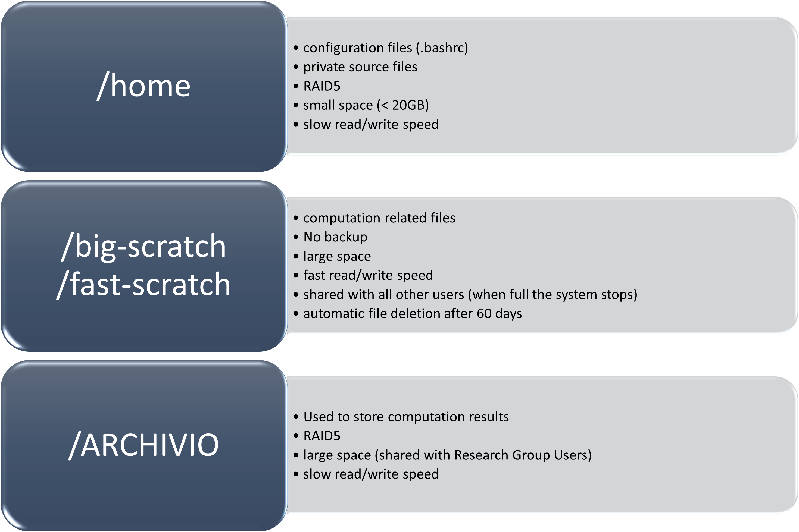

4. HOW TO SUBMIT A JOB¶
To perform a calculation on CFDHub there are some information that need to be addressed.
Generally the calculation on a HPC infrastructure is performed in batch mode, without the graphical interface, since the calculation runs faster.
When the calculation is completed, it is possible to postprocess the results using the graphical interface, or transferring the relevant files on your local machine.
4.1. WORKFLOW ON HPC FACILITY¶
The system is divided in different working areas in order to permit a more sustainable and efficient use of the available resources. The main working areas are reported and described here, please check how to efficiently use each work area in order to avoid affecting the whole system functionality.
All working areas are accessible from the login nodes and from the computational nodes.
Generally source and compiled code files, libraries, documents are placed in the user /home.
Files that are used to run calculations are located in the scratch area /fast-scratch and /big-scratch where the disk has a quick IO speed. The disk space is large, but is shared among all users, when the disk is full nobody will be able to work on the cluster anymore.
When a computation is finished, results should be moved to /ARCHIVIO, where each Research Group has its own archive space.
A diagram of the disk architecture is shown in the picture below.
Let's go in detail across the disks
/homePurpose: to save personal data such as libraries, sources, compiled code, documents etc. In general, this area is reserved to files that you think should be backed up.Capacity: a quota for each group is assigned, this limitation permits to avoid the filling up of the/homearea affecting other groups or users.To know the total quota and the actual occupancy of the available space typerepquota –augsAccess: all nodesBackup: YES/fast-scratch&/big-scratchPurpose: launch runs and put data actually on use.In order to preserve the purpose of this area and avoid a filling up of the area all data older than 60 days will be deleted from this area.Please be careful and move your data to/ARCHIVIOarea when they are not on use anymoreCapacity: approx. 6Tb to 30Tb on SSD (high speed) cache disk interfaces (normal) NLSAS disks to speed up data exchange processes.Access: all nodesBackup: NO/ARCHIVIOPurpose: save the results and data you want to keep for long term.This area permits to store data without affecting the running processes in other working areas.Capacity: related to the amount of storage purchased as a group, divided into blocks of 8Tb.Access: all nodesBackup: NO, however considered reliable being residing on enterprise band hard-drives with multi-disk data redundancy
4.2. LAUNCH YOUR JOB¶
A job can be launched only on a computational node.
To launch you job, three possibilities are available:
The submission of jobs through a queue require some instructions to the job scheduler to reserve a node (or some cpus of a node) to the user. The Job Scheduler of CFDHub is PBS Pro. In the Software section you may find some job submission examples.
Batch jobs require a script with the instructions. In the Software section you may find some script examples for your specific application.
Interactive jobs require the user to give interactively the instructions to the computational node using single commands or using a script.
4.2.1. Batch jobs using a queue¶
To submit a job through the Job Scheduler you need to prepare a launch file, to specify the computational requests. In this case, you need to ask to the job scheduler the necessary resources. The job scheduler will assign to you the resources as soon as they are available.
A launch file launch.sh is a shell script that has the following instructions:
#!/bin.bash # use bash as command interpreter
#$ -cwd # currentWorkingDirectory
#$ -N jobName # jobName
#$ -j y # merges output and errors
#$ -S /bin/bash # scripting language
#$ -l walltime=1:00:00 # jobDuration hh:mm:ss
#$ -q hub.q # queueName
#$ -pe mpi 16 # cpuNumber
### Specify the executable...
./an_executable
echo End Parallel Run
This script will launch a job in -cwd (the current workinf directory), the name of the job is jobName (for monitoring purposes), its durations will be 1 hour (walltime=1:00:00), the queue on which it will be run will be hub.q and it requires 16 cpus (mpi 16).
Please check with your CFDHub Contact Person what are the queues you have access to.
To submit the job from the login node you need to place the launch file launch.sh in the job folder, and submit it:
[user@nodevg-0-1 currentWorkingDirectory]$ qsub launch.sh
Useful commands are:
Command |
Description |
Example |
|---|---|---|
|
Submit a job |
|
|
Show status of jobs |
|
Show status of queue |
|
|
|
Delete a job |
|
|
Move a job to a different queue |
|
-pe mpi ## indicates the type of computational unit to be allocated, while ## is the number of processors to allocate.Each unit can be allocated in any node listed in the specified queue (-q xxx.q): the job scheduler will decide the nodes in which allocate the resources.
Bigger cpu clusters can be defined: –pe mpi_20 means that a unit of 20 CPUs will be allocated. Each computational unit (of for example 20 CPUs) is stored entirely in a single node and not divided in multiple ones (the unit dimension cannot exceed the number of CPUs physically present in a node). If the computational unit is bigger than 1, ## cannot be a generic number, but it must be a multiple of xx of the defined unit mpi_xx. mpi_xx is defined by the Administrator and it depends on the queue selected by the user (-q).
A list of the mpi_xx division defined for a single queue can be shown using the command:
[username@loginNode ~]$ qconf -sq hub.q | grep pe_
Some examples:
-pe mpi 20means that 20 single CPU units will be allocate, distributed in all the available nodes.-pe mpi_20 20means that a single unit of 20 CPUs will be considered and 20 CPUs will be allocated in a single node.-pe mpi_20 40means that two units of 20 CPUs will reserved in two different nodes and 20 CPUs (per node) will be allocated in those nodes.-pe mpi_20 60means that three units of 20 CPUs will reserved in three different nodes and 20 CPUs (per node) will be allocated in those nodes.
4.2.2. Interactive job using a queue¶
Jobs may be launched on a queue interactively. This job submission can be useful to check that the computation you are preparing will run without errors in batch mode. In this case, you need to ask to the job scheduler the necessary resources. The job scheduler will assign to you the resources as soon as they are available.
To request the interactive resources to the job scheduler:
qrsh -q hub.q -l h_rt=2:00:00 -l h_vmem=2G -pe mpi 2
These instructions request on the hub.q queue (-q hub.q) 2 cpus (-pe mpi 2) for 2 hours (-l h_rt=2:00:00, hh:mm:ss) and 2GB of RAM (-l h_vmem=2G).
You can adjust the request according to your need.
Please check with your CFDHub Contact Person what are the queues you have access to.
Yuo may prepare an alias for this command to be written in the .bash_aliases file in your home directory:
alias interactive_hub_02h_2cpu='qrsh -q hub.q -l h_rt=2:00:00 -l h_vmem=2G -pe mpi 2'
so when you need to ask for 2 cpus in interactive mode for 2 hours you just type:
[username@nodevg-0-1 currentWorkingDirectory]$ interactive_hub_02h_2cpu
4.2.3. Interactive job working on a node¶
Please check with your CFDHub Contact Person what are the nodes you have access to.
After having logged to the cluster through the VNC client, you will have the possibility to open a terminal.
You can briefly look at node usage opening on the cluster side Firefox or any web browser and looking at the web page http://master/ganglia.
From there you can have an overview of the CPU usage of all the nodes. The main drawback is that it still does not allow you to check if a node is completely free, i.e., someone may still be using the node to set-up or post-process a case… You will have to follow the next instructions to check completely the availability of a computing node.
- Log into the node running this command on the terminal:
[<username>@nodevg-0-X ~]$ ssh -Y <node> - After having accessed the node you must check the active processes of all users:
[<username>@<node> ~]$ ps -auxIt will list all the processes and you will have to look for the ones that may use CPU (3rd column) and/or RAM memory (4th column). You should not occupy a computing node if you see processes that use CPU and/or RAM. It means it is not free. If you have doubts you can ask your CFDHub Contact Person.